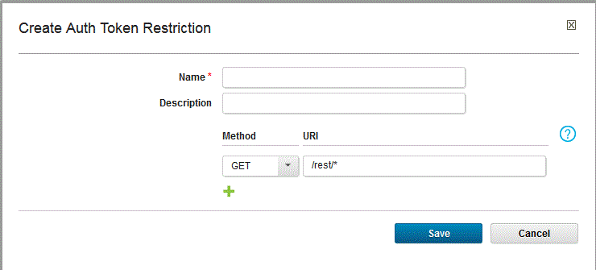

Restricting authentication tokens
Limit authentication token actions by applying token restrictions to process plug-in steps.
To create token restrictions, you must be in a role that has the Manage Auth Token Restrictions permission. See, Setting server configuration security.
The HCL UrbanCode Deploy server generates an authentication token whenever it runs a plug-in process step. The token authenticates the user that is running the step and has the same permissions as that user. You can limit the actions available to tokens by applying token restrictions to them. A token restriction is a set of one or more REST API commands. When a token-restricted plug-in step runs, it uses the commands that are defined by the token restriction regardless of the user's permissions.
You apply token restrictions to plug-in steps in processes. You can apply a different token restriction to every plug-in step in a process. If you do not apply a restriction to a step, the default token restriction is used. The default token enables all the supported methods for all REST resources. You can modify the default token restriction but you cannot delete it.
Each token restriction command consists of a verb and a URI. Verbs are methods that you can use on the REST resources. The URI represents a REST resource, such as https://hostname:port/rest/deploy/component/. You can define 30 commands in a single token restriction.
The methods that you can use in a command are described in the following table.
| Method | Description |
|---|---|
| ALL | Enable all other verbs for the associated URI. |
| Delete | Delete the object at the REST endpoint. |
| POST | Create an object of the type that is defined by the URI, or update the object at the URI. |
| GET | Retrieve information about the service at the URI. |
| PUT | Update the object at the URI. |
- On the server, click Settings > Token Restrictions.
- On the Token Restrictions pane, click Create Auth Token Restriction.
- In the Create Auth Token Restrictions dialog box, in the Name field, enter a name for the token restriction.
- In the Description field, enter a description for the restriction.
-
Define one or more requests by completing the following steps:
- In the Method list, select the request verb.
-
In the URI field, paste or enter the URI. The URI must start with the forward-slash character "/". You can use the asterisk (*) wildcard as the last character in the URI. For example, the following request allows information to be retrieved from all REST services:

-
If you want to define another request, click Add; otherwise, click Save. After you save the token restriction, you can copy, edit, and delete it.
Note: You cannot delete the default restriction.
When you configure a plug-in step, you can apply a token restriction to the step. You can also create a token restriction from the plug-in process step. By default, the default token restriction is applied to each plug-in step.
Parent topic: Tokens